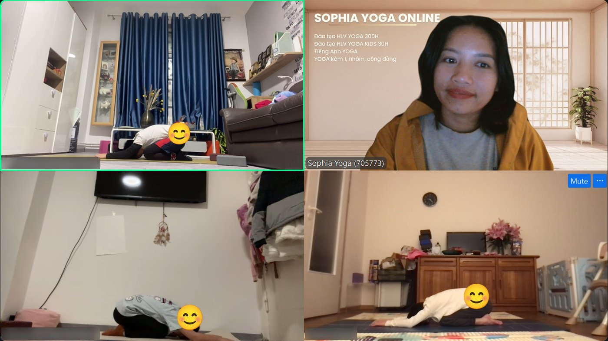
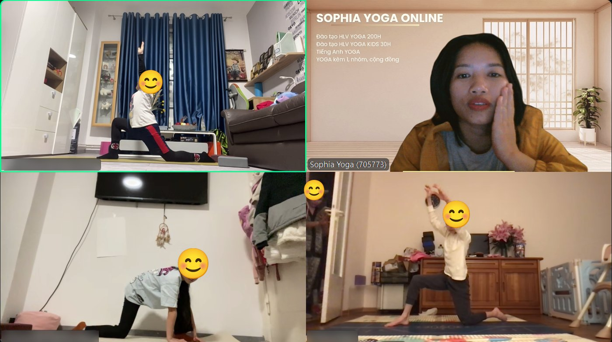

Yoga người lớn · Yoga cân bằng phục hồi
Ứng dụng yoga cân bằng phục hồi cho người mất ngủ lâu năm
Có người mất ngủ vài đêm vì lo một chuyện. Có người mất ngủ năm năm, mười năm, đến mức quên mất cảm giác đặt lưng xuống là ngủ là như thế nào.
Một cô học viên ngoài năm mươi kể với Sophia về chiếc đồng hồ trên đầu giường. Đêm nào cô cũng nhìn nó. Mười một giờ. Một giờ. Hai giờ bốn mươi. Bốn giờ. Mỗi lần nhìn là một lần tính: “Còn ba tiếng nữa là phải dậy. Mai lại mệt rồi.”
Cô đã thử đủ cả. Uống sữa ấm, ngâm chân, thuốc nam, thuốc ngủ. Có loại đỡ được một thời gian rồi thôi.
Buổi tập thứ hai, Sophia chỉ xin cô một việc nhỏ: tối nay quay mặt đồng hồ vào tường.
Tuần sau cô đến lớp, nói: “Vẫn thức, cô ạ. Nhưng em không đếm nữa. Lạ là em thấy đỡ sợ đêm.”
Câu chuyện được kể lại từ nhiều học viên có cùng vấn đề, đã đổi chi tiết để giữ riêng tư.
Bài Ứng dụng yoga cân bằng phục hồi cho giấc ngủ đã chia sẻ những điều căn bản: một ngày thuận giấc, tám tư thế buổi tối, cách quét cơ thể. Bài này dành riêng cho những người đã mất ngủ lâu năm. Với họ, mấy mẹo nhỏ thường không đủ. Mất ngủ lâu ngày giống một con đường mòn: đi mãi thành quen. Muốn mở một con đường khác, phải đổi cả cách sống, cách thở, cách nghĩ về giấc ngủ, chứ không chỉ thêm một tư thế trước giờ đi ngủ.

- Vòng lặp mất ngủ
- Ba gốc
- Hiệu suất giấc ngủ
- Năm thể
- Hơi thở buổi tối
- Chuỗi 15 phút
- Một ngày thuận tự nhiên
- Tám bậc yoga
- Khi nào đi khám
Vì sao mất ngủ lâu ngày lại tự nuôi chính nó
Lúc đầu, mất ngủ thường có một lý do: một chuyện buồn, một giai đoạn bận, một lần ốm, sinh con, mãn kinh. Lý do ấy qua rồi, nhưng giấc ngủ không quay lại. Các nhà nghiên cứu giấc ngủ gọi đó là những yếu tố duy trì. Cô hay vẽ cho học viên một vòng tròn:
Giấc ngủ là thứ không cố được. Càng cố, não càng tỉnh, vì “cố” là trạng thái của làm việc chứ không phải của nghỉ. Nằm trên giường càng lâu mà không ngủ, não càng học rằng giường là nơi để trằn trọc. Ngày mệt nên ngủ trưa dài, uống thêm cà phê, tối đến lại càng khó ngủ.
Cách được khuyên đầu tiên không phải là thuốc. Hội Bác sĩ Hoa Kỳ khuyên người lớn mất ngủ mạn tính nên được hướng dẫn liệu pháp nhận thức hành vi cho mất ngủ (CBT-I) trước tiên (Qaseem và cộng sự, Annals of Internal Medicine 2016). Hướng dẫn châu Âu cũng nói như vậy (Riemann và cộng sự, Journal of Sleep Research 2017). Những nguyên tắc của nó khá gần với lối sống yoga: giờ dậy cố định, giường chỉ để ngủ, rời giường khi không ngủ được, và nhìn lại những suy nghĩ làm mình sợ đêm.
Ba gốc của yoga cân bằng phục hồi
- 🌬️Hơi thở là gốc. Người mất ngủ lâu năm thường thở nhanh và nông cả ngày lẫn đêm. Thở ra chậm và dài là cách trực tiếp nhất để bật chế độ nghỉ của hệ thần kinh.
- 🌿Cột sống là trọng tâm. Cột sống được giãn nhẹ, được đỡ, thì cơ thể mới thật sự buông khi nằm. Lưng căng thì giấc ngủ cũng căng.
- ⚖️Cân bằng là hướng đi. Ngày đủ hoạt động thì đêm mới đủ nghỉ. Ngày có ánh sáng thì đêm mới có bóng tối. Giấc ngủ là nửa kia của một ngày cân bằng.
Cơ thể vốn biết ngủ. Không ai phải dạy em bé cách ngủ. Khả năng ấy vẫn còn trong mình, chỉ bị phủ lên bởi nhiều năm thói quen, lo âu và ánh đèn. Việc của mình là gỡ dần từng lớp, rồi tin vào cơ thể.
Hiệu suất giấc ngủ của mình
Người mất ngủ lâu năm thường nằm trên giường chín, mười tiếng để “gom” được năm tiếng ngủ. Thử tính xem đêm qua của mình ra sao.
Chỉ là ước lượng của mình. Ghi lại vài đêm liền, mang theo khi đi khám, bác sĩ sẽ hiểu mình nhanh hơn.
Khi hiệu suất thấp, người ta thường được khuyên rút ngắn thời gian nằm trên giường cho gần với thời gian ngủ thật, rồi nới dần khi giấc ngủ đã liền mạch hơn. Cách này hiệu quả nhưng làm mệt trong vài tuần đầu, nên cô khuyên làm cùng bác sĩ hoặc chuyên gia giấc ngủ, nhất là người lớn tuổi, người phải lái xe, người có bệnh nền.
Mất ngủ trên cả năm thể
Thân
Ít vận động ban ngày, ngồi nhiều. Cơ căng, tay chân lạnh, hay mỏi cổ vai.
Khí
Thở nhanh, nông, hay nín thở. Tối đến người như vẫn đang chạy.
Tâm
Sợ đêm. Bực mình với chính mình vì không ngủ được.
Trí
Đầu nghĩ không dừng. Tính toán giờ ngủ, lo cho ngày mai.
Tinh thần
Không cho phép mình buông. Quen kiểm soát mọi thứ, kể cả giấc ngủ.
Có học viên ngạc nhiên khi cô nói: người mất ngủ lâu năm thường là người rất có trách nhiệm. Họ quen lo, quen cố, quen làm cho xong. Giấc ngủ lại cần điều ngược lại: buông tay.
Hơi thở buổi tối: thở ra dài
Ngồi trên giường hoặc nằm. Hít vào nhẹ qua mũi bốn nhịp. Thở ra chậm bảy nhịp, như thổi qua một ống hút. Không cần hít thật đầy. Nếu thấy hụt hơi, rút ngắn lại, thở ra năm hay sáu nhịp cũng được.
Yoga và mất ngủ. Trong một nghiên cứu nhỏ ở Harvard, người mất ngủ mạn tính tập một chuỗi yoga đơn giản mỗi ngày trong tám tuần, tự ghi nhật ký giấc ngủ, thấy thời gian ngủ và hiệu suất giấc ngủ cải thiện (Khalsa, Applied Psychophysiology and Biofeedback 2004). Một phân tích gộp ở phụ nữ có vấn đề về giấc ngủ cũng thấy yoga giúp chất lượng ngủ tốt hơn so với nhóm không tập (Wang và cộng sự, BMC Psychiatry 2020).
Thiền cho người mất ngủ lâu năm. Ở Stanford, 54 người mất ngủ mạn tính học thiền chánh niệm tám tuần. Họ bớt trằn trọc và bớt bị cuốn vào suy nghĩ trước khi ngủ, nhiều người vẫn giữ được kết quả sau sáu tháng (Ong và cộng sự, Sleep 2014).
Chuỗi 15 phút trước khi ngủ
Chuỗi này tập trên giường hoặc trên thảm cạnh giường, đèn vàng dịu. Tư thế rất đơn giản, đầu luôn được kê, không có gì làm tim đập nhanh. Mục đích không phải là giãn cơ cho sâu mà là báo cho cơ thể biết: ngày đã hết rồi.
Ngày đã hết rồi
- Ngồi, tay trên bụng Thở ra dài hơn hít vào. Nghĩ lại một điều tốt nhỏ trong ngày.
- Mèo bò chậm Quỳ bốn điểm, mỗi chiều một hơi thở dài. Cột sống được đánh thức nhẹ lần cuối.
- Tư thế em bé Ngồi lên gót, trán xuống gối. Hai gối mở rộng nếu bụng to. Thở vào lưng.
- Vặn mình nằm Nằm ngửa, hai gối đổ sang phải, đầu quay nhẹ sang trái. Đổi bên giữa chừng.
- Chân lên tường Mông sát tường, hai chân gác lên tường, hoặc gác bắp chân lên ghế. Tay mở.
- Thở tiếng ong Năm đến bảy hơi “mmm” thật nhẹ.
- Nằm thư giãn, quét cơ thể Đắp chăn. Đi qua từng phần: bàn chân, bắp chân, đùi, bụng, ngực, tay, vai, cổ, mặt. Đến đâu, thả lỏng đến đó.


Khi tỉnh giữa đêm
Đây là lúc khó nhất. Cô hay chia sẻ với học viên mấy điều:
- Không nhìn đồng hồ. Không cầm điện thoại. Ánh sáng xanh và con số trên màn hình đều đánh thức não.
- Nằm yên, thở ra dài, quét cơ thể từ chân lên. Nằm nghỉ yên tĩnh cũng là nghỉ, dù chưa ngủ.
- Nếu đã khá lâu, khoảng hai mươi phút, mà vẫn tỉnh và bắt đầu bứt rứt, hãy dậy. Sang chỗ khác, đèn mờ, ngồi thở hoặc đọc vài trang sách giấy nhẹ nhàng. Buồn ngủ thì quay lại giường. Để giường gắn với giấc ngủ, không gắn với trằn trọc.
- Có giấy bút cạnh giường. Một ý nghĩ cứ quay đi quay lại thì viết nó ra, “sáng mai tính”.
- Nói với mình: “Đêm nay ngủ ít cũng không sao. Mai mình vẫn sống được.” Bớt sợ đêm là bớt được một nửa gánh nặng.
Một ngày thuận tự nhiên
Giấc ngủ đêm nay bắt đầu từ lúc thức dậy sáng nay. Đây là phần cô muốn nhấn mạnh nhất, vì nó quan trọng hơn mọi tư thế.
- Dậy cùng một giờKể cả cuối tuần, kể cả đêm qua ngủ ít. Đây là cái mỏ neo của đồng hồ sinh học. Giờ đi ngủ có thể xê dịch, giờ dậy thì giữ.
- Tắm nắng sángRa ngoài trời trong vòng một giờ sau khi dậy, mười lăm đến ba mươi phút. Ánh sáng tự nhiên buổi sáng là tín hiệu mạnh nhất để tối đến cơ thể tiết melatonin đúng giờ.
- Đi chân đất, gần thiên nhiênĐi bộ trên cỏ, trên cát, chăm vườn, ngồi dưới gốc cây. Cơ thể mệt một cách lành mạnh, đầu được nghỉ khỏi màn hình.
- Vận động ban ngàyĐi bộ nhanh, đạp xe, tập yoga buổi sáng hoặc chiều. Tránh tập mạnh trong vòng ba giờ trước khi ngủ.
- Cà phê, tràChỉ uống trước buổi trưa. Caffeine còn ở lại trong máu nhiều giờ, ở người lớn tuổi còn lâu hơn.
- Ngủ trưaNếu cần, không quá hai mươi phút và trước ba giờ chiều. Người mất ngủ nặng có khi nên bỏ hẳn một thời gian.
- Ăn tốiĂn sớm, nhẹ, trước giờ ngủ ba tiếng. Nhiều rau, ít dầu mỡ, ít cay. Rượu làm dễ ngủ lúc đầu nhưng làm giấc ngủ vụn vỡ nửa đêm về sau.
- Tắt đèn trước khi tắt mắtMột giờ trước khi ngủ, tắt màn hình, hạ đèn vàng, tắm nước ấm. Phòng ngủ tối, mát, yên tĩnh.
- Viết ra rồi gấp lạiViết danh sách việc ngày mai trước khi ngủ năm phút giúp người ta ngủ nhanh hơn so với viết về những việc đã xong (Scullin và cộng sự, Journal of Experimental Psychology: General 2018). Thêm một dòng biết ơn.

Tám bậc yoga cho người mất ngủ
Giới
Yama
Ahimsa: không trách mình vì không ngủ được. Brahmacharya: điều độ, không tiêu hao sức đến cạn rồi mới nghỉ. Aparigraha: buông bớt những việc, những lo lắng không phải của mình.
Luật
Niyama
Santosha: chấp nhận đêm nay ngủ được bao nhiêu thì là bấy nhiêu. Saucha: phòng ngủ gọn, sạch, thoáng. Tapas: giữ giờ dậy mỗi sáng, kể cả khi lười.
Tư thế
Asana
Vài tư thế dịu, đầu được kê, cột sống được đỡ. Không cần nhiều.
Hơi thở
Pranayama
Thở ra dài, thở tiếng ong, thở luân phiên mũi nhẹ nhàng. Không tập thở mạnh, thở nhanh buổi tối.
Thu giác quan
Pratyahara
Tắt màn hình, hạ đèn, giảm tiếng. Giác quan quay vào trong thì giấc ngủ mới tìm đến.
Tập trung
Dharana
Đặt chú ý vào hơi thở hoặc một phần cơ thể, thay vì để nó chạy theo suy nghĩ.
Thiền
Dhyana
Ngồi yên mười phút buổi sáng hoặc chiều. Tập quen với việc nhìn suy nghĩ đi qua mà không đuổi theo.
Hòa nhập
Samadhi
Giấc ngủ sâu, ở một nghĩa nào đó, cũng là lúc mình buông hết. Không cố được. Chỉ đón được.
Yoga Nidra, “giấc ngủ yoga”, là một cách thực hành ở ranh giới giữa thức và ngủ, nằm yên và đi qua cơ thể theo lời hướng dẫn. Nhiều học viên của cô nghe một bài Yoga Nidra mười lăm, hai mươi phút vào buổi chiều hay trước giờ ngủ. Có người ngủ thiếp đi giữa chừng. Điều đó cũng tốt.
Khi nào cần đi khám
Mất ngủ lâu năm nên được bác sĩ xem, để tìm những nguyên nhân có thể chữa được. Yoga và lối sống đi cùng, không thay cho chăm sóc y tế. Nên đi khám khi:
- Mất ngủ ba đêm mỗi tuần trở lên, kéo dài hơn ba tháng, làm ảnh hưởng công việc và cuộc sống.
- Kèm buồn chán kéo dài, mất hứng thú, thấy vô vọng, hoặc có ý nghĩ làm hại bản thân. Mất ngủ và trầm cảm hay đi cùng nhau. Hãy nói ngay với người thân và tìm đến bác sĩ. Nếu thấy mình không an toàn, gọi cấp cứu 115.
- Ngáy to, người nằm cạnh thấy mình ngừng thở từng lúc, sáng dậy đau đầu, ngày buồn ngủ ríu mắt. Có thể là ngưng thở khi ngủ.
- Chân bồn chồn, khó chịu, phải cử động mới đỡ khi nằm.
- Buồn ngủ khi đang lái xe hay làm việc nguy hiểm.
- Tiểu đêm nhiều lần, đau nhức, ho, khó thở về đêm, hồi hộp, nóng bừng, run tay, sụt cân.
- Đang dùng thuốc ngủ lâu ngày. Không tự ý ngưng thuốc, vì ngưng đột ngột có thể làm mất ngủ nặng hơn. Hãy bàn với bác sĩ cách giảm dần.
Lời nhỏ cuối bài
Cô học viên với chiếc đồng hồ giờ vẫn có đêm thức giấc. Nhưng cô không còn nằm trằn trọc đến sáng. Cô dậy, ngồi bên cửa sổ thở một lúc, rồi quay lại giường. Sáng nào cũng ra công viên đi bộ chân trần trên cỏ. Cô bảo: “Em không còn đánh nhau với giấc ngủ nữa. Em để nó tự đến.”
Giấc ngủ giống như một chú chim. Đuổi theo thì nó bay. Ngồi yên, nó tự đậu xuống.
Thở ra. Dài hơn một chút.
Đêm nay, mình chỉ cần nghỉ.
🌙 Muốn có người đi cùng để tìm lại giấc ngủ?
Sophia Yoga có lớp người lớn trực tiếp, lớp Zoom buổi tối và lớp kèm 1 kèm 1 (500.000đ / giờ), theo hướng yoga cân bằng phục hồi: hơi thở là gốc, cột sống là trọng tâm, tập vừa sức. Ai muốn mang yoga đến với các con, có khóa đào tạo HLV Yoga trẻ em.
Tài liệu tham khảo
- Qaseem A. và cộng sự (2016). Management of chronic insomnia disorder in adults: a clinical practice guideline from the American College of Physicians. Annals of Internal Medicine, 165(2), 125–133.
- Riemann D. và cộng sự (2017). European guideline for the diagnosis and treatment of insomnia. Journal of Sleep Research, 26(6), 675–700.
- Khalsa S.B.S. (2004). Treatment of chronic insomnia with yoga: a preliminary study with sleep–wake diaries. Applied Psychophysiology and Biofeedback, 29(4), 269–278.
- Wang W.L. và cộng sự (2020). The effect of yoga on sleep quality and insomnia in women with sleep problems: a systematic review and meta-analysis. BMC Psychiatry, 20, 195.
- Ong J.C. và cộng sự (2014). A randomized controlled trial of mindfulness meditation for chronic insomnia. Sleep, 37(9), 1553–1563.
- Scullin M.K. và cộng sự (2018). The effects of bedtime writing on difficulty falling asleep: a polysomnographic study comparing to-do lists and completed activity lists. Journal of Experimental Psychology: General, 147(1), 139–146.
- Walker M. (2017). Why We Sleep. Scribner.
- Satyananda Saraswati (1976). Yoga Nidra. Bihar School of Yoga.
- Patañjali. Yoga Sutra, chương II (Yama, Niyama, II.29–45).
Ảnh trong bài là ảnh thật từ các buổi tập của Sophia Yoga, mặt học viên đã được che và tên trên Zoom đã được làm mờ. Câu chuyện là minh họa, ghép từ nhiều học viên. Bài viết chia sẻ kiến thức và kinh nghiệm tập luyện, không thay cho lời khuyên và chăm sóc của bác sĩ.